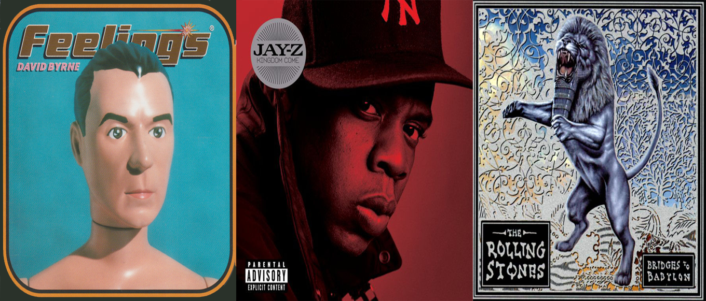
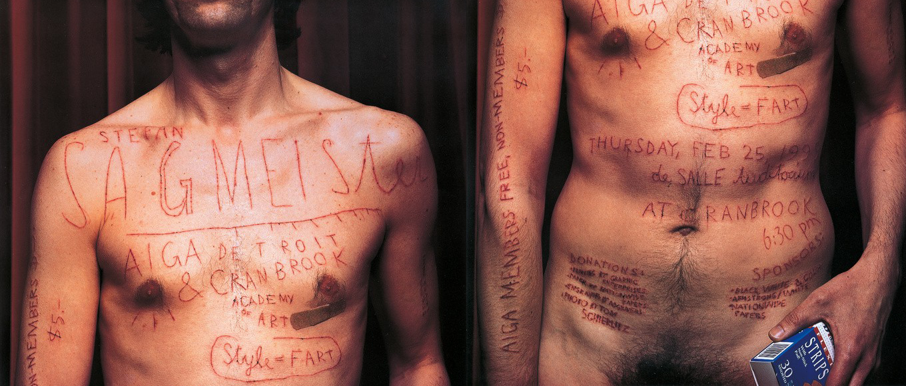
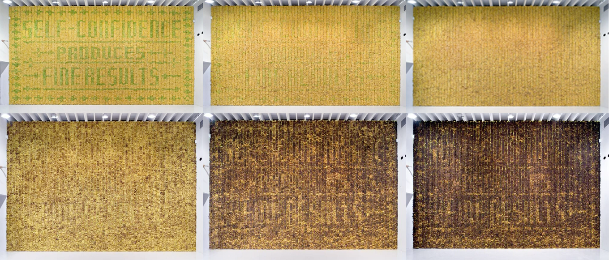

Early life and career
Stefan Sagmeister is an Austrian graphic designer, typographer and artist. He is famous (and sometimes notorious) for upsetting the norm and designing things that provoke people in a variety of ways. He works using a plethora of mediums such as graphic design, typography, conceptual exhibitions, video and even environmental art. Sagmeister discovered his passion for design at merely fifteen years old when he began writing for a small Austrian magazine called ‘Alphorn.’ He soon realised he was far keener on designing the layout as opposed to writing the articles themselves.
Stefan went on to earn a master of fine arts degree from the University of Applied Arts in Vienna in 1985 and was awarded a scholarship to study at the Pratt Institute in New York. During his time studying in New York he became heavily inspired by the work of Tibor Kalman, who he would later work for briefly under his design firm M&Co. Sagmeister told the American Institute of Graphic Arts: “Tibor Kalman was the single most influential person in my design-y life and my one and only design hero.” Sagmeister worked for the Leo Burnett Hong Kong design group from 1991 before returning to New York in 1993 to work for M&Co, however his employment there was short lived as Kalman disbanded the firm that same year to pursue other ventures.
Sagmeister Inc.
Following the disbandment of M&Co Sagmeister decided to focus on his own interests and form his own design firm entitled ‘Sagmeister Inc.’ The studio was (and still is) based in New York; in order to announce the creation of his firm (in typical Sagmeister fashion) he boldly released an image of himself completely naked accompanied by the details of his new venture as well as the firm’s address. The studio has designed a variety of graphics, branding and packaging for huge array of clients, but one specific area that Sagmeister has particularly excelled in is his design of album cover art. Sagmeister explained during a TED talk in 2009 that he “originally opened the studio in New York to combine my two loves: music and design." Under the firm he has designed album covers for a wide range of his own favourite musicians such as Lou Reed, the rolling stones, David Byrne, talking heads and even Jay-Z. I.D. magazine wrote in the late 90s that Sagmeister’s “CD package designs are what poetry is to prose: distilled, intense, cunning, evocative and utterly complete. His intentions have set a new standard.” Sagmeister was always a fan of the musicians that he worked for, he would not design for them otherwise; this allowed him to create unique designs based on the artist’s personality and musical style. Sagmeister experimented with a variety of packaging and productions tricks that incorporated die-cuts, transparent materials and contrasting colours, however his eccentric, innovative concepts and ideas were what caused his designs in this field to be so impactful. His work within the music industry has earned him two Grammy awards for package design. Under the firm Sagmeister has also worked for clients such as Adobe, Snapchat, BMW, HBO, Red bull, Oreo among a surplus of others. The firm states that they “specialize in brand identities, campaigns, social strategy & content creation, commercials, websites, apps, books, environments, and more.” This statement matched with his expansive client list shows that Sagmeister has the ability to adapt his design style to meet any requirement and create something powerful for whoever he is working for.
Under the firm, Sagmeister has released three books: ‘Made you look,’ ‘Sagmeister – Another book’ and ‘Things I have learned in my life so far.’ ‘Made you look’ features essentially everything that the company has designed as well as personal notes from Sagmeister and letters from clients; “including the bad stuff” the firm’s website claims. The book features a calm dog on the sleeve covering the book which turns into an angry dog when removed, the edges of the pages spell the title when the book is flexed in one direction and show a series of dog bones when flexed the opposite direction. This extreme attention to detail and care for quality is a prime example of the perfectionist Sagmeister is when it comes to design.
In 2012 Sagmeister introduced 25-year-old Jessica Walsh as his partner at Sagmeister Inc. Walsh had been an employee at the firm for two years who Sagmeister stated “never ceased to amaze” him. The firm was subsequently renamed “Sagmeister and Walsh” and in order to announce the partnership and new chapter for the agency, Sagmeister and Walsh released an image of them both naked in the office in order to pay homage to the image Sagmeister himself created 19 years prior when forming the business.
Notable personal work
Every seven years, Sagmeister closes Sagmeister Inc. for a year-long sabbatical that he uses to work on personal ventures and focus on ‘creative rejuvenation.’ His logic is that will take five years from his retirement years and intersperse them throughout his career. He, nor any of the firm, will accept work from any clients. Sagmeister even turned down the opportunity to design for the Obama campaign as he was in his sabbatical period at the time. These breaks in his client work prove to help Sagmeister create some of his most intriguing, creative and ultimately brilliant designs.
One of Sagmeister’s most bold and controversial design ideas was an image he produced for a lecture at Cranbrook college, Detroit. Sagmeister claimed he wished to “visually convey the pain that accompanies most of our studio’s design projects” as well as “reinforce the humanity of the design process and the human scale of interpersonal communication.” He therefore requested an intern to physically carve text into his torso with an X-acto knife. The result was then photographed and displayed using offset lithograph on paper.
Sagmeister began an instalment in September 2008 in Waagdragerhof Square, Amsterdam entitled ‘Obsessions make my life worse and my work better.’ Sagmeister and a group of almost 100 volunteers began to place 250,000 eurocents across the ground; the coins were sorted into 4 shades and were spread across a 300-square metre area. They were arranged to spell the title of the instalment in a distinct typographic style. After completion, the coins were left unguarded for anyone who wished to interact with them. A mere 20 hours later a man came with a large bag and began to scoop up the coins and remove them. Residents of the area called the police; the local authorities stopped the ‘criminal’ and proceeded to gather and retain the remaining coins in order to ‘preserve the artwork.’
Sagmeister also opened an exhibition in Deitch Projects in New York in which he erected a wall of 10,000 bananas. Some of the bananas were green and some were yellow, the contrast in colour formed a pattern and spelt out the phrase ‘Self-confidence produces fine results.’ As the days passed and the green bananas turned yellow the text began to disappear however as the yellow bananas began to turn brown the text briefly reappeared.
What I find to be Sagmeister’s most intriguing work, however, is his 6-year long film project entitled ‘The happy film.’ Sagmeister sought to explore whether one could directly influence their own happiness. He therefore underwent a documented process in which he trialled Meditation, Therapy and Drugs, grading his level of happiness along the way. The film concept also acted as a series of instalments from 2012-2015 in which Sagmeister produced a variety of exhibitions and designs based around the idea of happiness. I feel Sagmeister’s venture into film this way shows his diversity and adaptability as a designer.
Conclusion
Stefan Sagmeister has had a career exploring all aspects of design. From the array of mediums, he has worked with throughout his career to the abstract personal projects he has undertaken, Sagmeister shows he is on a constant quest to broaden his creative ability and enhance his spectrum of design work. Every design or instalment he does is well thought out and ensures that every aspect of the design is in the right place otherwise it is removed. He has had a huge impact on the design industry as a whole and his influence has branched into music, advertising and packaging. Sagmeister pushes the boundaries of what can be done with design whether it causes controversy or not, he also shows how there is design potential in almost everything in life we just need to explore it. Personally, Sagmeister has taught me a lot as a designer and how to think regarding design; firstly, the importance of working on designs you are passionate about, not just designs for career oriented reasons, as it will help build your creativity and allow you to produce better work in general. Secondly, I have learnt that design is not limited to a computer screen or a piece of paper but that it surrounds us every day and it’s important as a designer to work outside of your comfort zone or preferred medium.